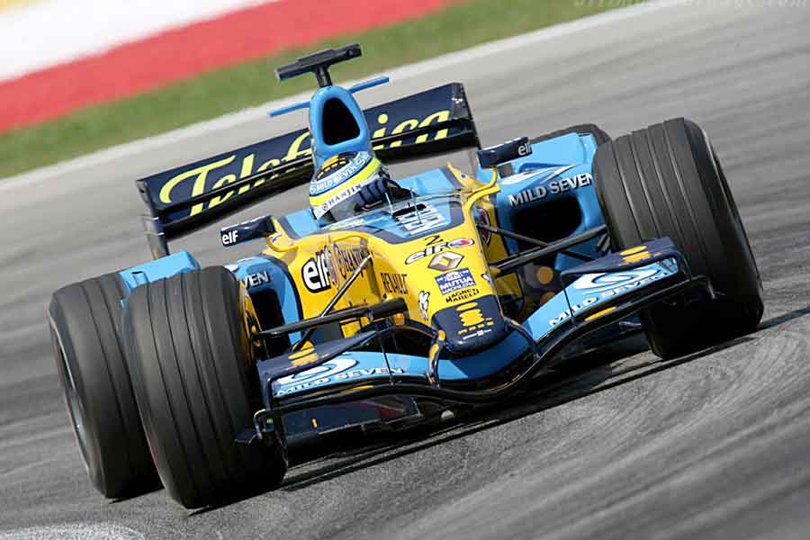

Формула-1 — це найвища категорія перегонів на відкритих колесах.
Сучасні боліди здатні розганятися до сотні за лічені секунди, створюючи неймовірне видовище на трасі.
У цих перегонах вирішальне значення має не лише майстерність пілота, а й точна робота інженерів під час піт-стопів.
Не пропустіть наступний етап Гран-прі цього вікенду.

Офіційні новини та результати гонок: Formula1.com